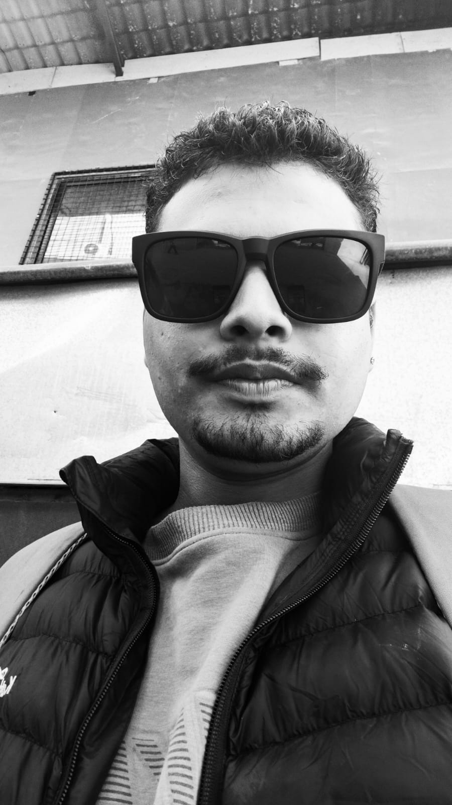

Networking & Cyber Security Student | Web Developer | Technology Enthusiast

I am highly interested in Cyber Security, Ethical Hacking, Networking, Artificial Intelligence, and Web Development. I enjoy learning how digital systems operate, identifying security risks, and building innovative technological solutions.
Before joining Islington College, I completed my +2 in Computer Science from National Infotech College, where I developed a strong foundation in computing, programming, and information technology. I completed my schooling from Gautam Secondary School.
Throughout my academic journey, I have worked on several website development and technology-based projects. I continuously improve my skills through self-learning, practical implementation, and research on emerging technologies.
My goal is to become a skilled Cyber Security professional capable of protecting digital infrastructures, identifying vulnerabilities, and contributing to a secure digital future.
To build a successful career in Cyber Security by continuously learning new technologies, enhancing my technical expertise, and contributing to securing digital systems against modern cyber threats while creating impactful technology solutions.